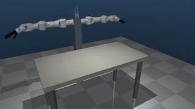

← dashboard · rendered by benchmark37_report.py · 2026-11-22 00:50
The universe, strictly: HandsOn ships 37 distinct rokae_wuji2 task arenas
(git-tracked files only; our generated variants excluded). DexJoCo ships 11 tasks and no wuji2
hand natively — all 11 map into the 37 via twin scenes. Every row below is one shipped task:
attempted with the current verb registry (incl. the new hold/push/flip verbs and the
[s2-replan] layer), or — where no registered verb applies — the proposer's refusal
is recorded as the outcome. No row is omitted.
| task (shipped arena) | video | bench | setup fidelity | success criterion | outcome | evidence / limiting factor | run dirs |
|---|---|---|---|---|---|---|---|
| t08_hammer_nail | both | exact scene, tianji arm · retried with atlas working dials | nail >=6mm | PASS | 2 attempts · nail_drove_mm=6.6 | strike_t08_hammerS_tianji_235350, strike_t08_hammerS_tianji_000545 | |
| t08 OFFICIAL bimanual | both | exact scene, tianji arm | nail>=6mm + block>=30mm | PASS | 1 attempt · nail_drove_mm=11.4 | strike_official_tianji_235423 | |
| hammer_nail = t08_hammer_nail (same shipped scene ancestry) | DexJoCo | twin of t08 (same scene ancestry) | nail >=6mm | PASS | 2 attempts · nail_drove_mm=6.6 | strike_t08_hammerS_tianji_235350, strike_t08_hammerS_tianji_000545 | |
| ball_to_bowl | HandsOn | object-port (hammerS; scene balls are cross-object) | in bowl <=90mm | PASS | 2 attempts · lifted=True | place_hammerS_local_mocap_tianji_235521, place_hammerS_local_mocap_tianji_235546 | |
| bucket_pick | both | object-port (box60) · retried with atlas working dials | in bucket | PASS | 2 attempts · obj_bowl_xy_mm=86.8 | bucket_box60_tianji_235610, bucket_box60_tianji_000628 | |
| monitor_mouse / click_mouse | both | scene-relocated (mouse moved into reach, labeled) · retried with atlas working dials | click >=4mm | PASS | 2 attempts · btn_travel_mm=13.5 | press_mouse_tianji_235627, press_mouse_tianji_000609 | |
| plant / water_plant | both | pour-gesture analog (V21 vessel) | tilt>=105deg held over target | PASS | 1 attempt · pour_tilt_deg=118.9 | pour_cyl30x80_tianji_235645 | |
| c07_ycb_pour | HandsOn | vessel analog (V21) | tilt>=105deg held | PASS | 1 attempt · pour_tilt_deg=142.7 | pour_box40_tianji_235708 | |
| d03_bimanual_handoff | HandsOn | object-port (box60) | held by LEFT, z>0.95 | PASS | 1 attempt · obj_leftpalm_mm=88.5 | handoff_box60_tianji_235726 | |
| t43_squeeze_scissors | HandsOn | exact scene | hinge >=120mrad | PASS | 1 attempt · btn_travel_mm=92.3 | t43_scissors_tianji_235749 | |
| glass_v2 / fold_glasses | both | exact scene | temple >=250mrad | PASS | 1 attempt · btn_travel_mm=27.4 | glasses_fold_tianji_235802 | |
| t25_place_cup_on_plate | HandsOn | object-port (cup76x90) | on marker <=80mm | FAIL | 2 attempts · obj_target_xy_mm=301.2 · PLACE_MISSED | place_cup76x90_local_mocap_tianji_235818, place_cup76x90_local_mocap_tianji_235838 | |
| orient_rubiks_cube | HandsOn | object-swap (box60 cube class) | reorient >=45deg held | FAIL | 2 attempts · spin_deg_achieved=23.8 · SPIN_SHORT | b37_flipz_box60_235858, b37_flipx_box60_235919 | |
| t09_insert_peg | HandsOn | object-port (rod15x150) | peg at marker <=80mm | FAIL | 1 attempt · obj_target_xy_mm=377.8 · PLACE_MISSED | place_rod15x150_local_mocap_tianji_235939 | |
| table_tongs / pinch_tongs | both | scene-relocated (tongs spawn out of reach, labeled) | hinge >=120mrad | FAIL | 1 attempt · btn_travel_mm=0.0 · PRESS_MISSED | tongs_squeeze_tianji_235956 | |
| ipad / bimanual_unlock_ipad | both | exact scene | button touch <=18mm | FAIL | 2 attempts · btn_travel_mm=0.0 · PRESS_MISSED · goal: retry with IK recovery | ipad_button_tianji_000009, ipad_button_tianji_004454 | |
| microwave_cook | both | exact scene | start_button touch <=18mm | FAIL | 2 attempts · btn_travel_mm=0.0 · PRESS_MISSED · goal: retry with IK recovery | microwave_start_tianji_000023, microwave_start_tianji_004511 | |
| t12_load_and_start_microwave | HandsOn | exact scene (press half only) | start button (load unattempted) | FAIL | 2 attempts · btn_travel_mm=0.0 · PRESS_MISSED · goal: reach/press start_button — press half | gen_d02_start_button_joint_tianji_000036, ra_t12_load_and_start_tianji_002601 | |
| bimanual_hanoi | both | object-swap (disc100x15 analog) | disc moved to post (analog: marker) | FAIL | 1 attempt · obj_target_xy_mm=125.9 · PLACE_MISSED | place_disc100x15_local_mocap_tianji_000046 | |
| d04_clear_hanoi_obstacles | HandsOn | object-swap (disc100x15 analog) | obstacle cleared >=150mm | FAIL | 2 attempts · obj_target_xy_mm=200.0 · NOT_CLEARED | push_disc100x15_tianji_000104, push_disc100x15_tianji_000118 | |
| bimanual_assembly | both | base scene | assembly chain | FAIL | 2 attempts · btn_travel_mm=0.0 · PRESS_MISSED · goal: reach/press industreal_round_peg_8mm — reach the peg | ra_bimanual_assembly_tianji_002615 | |
| bimanual_photograph | both | base scene | two-hand camera use | FAIL | 2 attempts · btn_travel_mm=0.0 · PRESS_MISSED · goal: reach/press link_19 — reach the camera | gen_camera_shutter_joint_tianji_000133, ra_bimanual_photograp_tianji_002629 | |
| b02_nut_bolt_assembly | HandsOn | base scene | thread nut on bolt | FAIL | 2 attempts · btn_travel_mm=0.0 · PRESS_MISSED · goal: reach/press nut_root_body — reach the nut | ra_b02_nut_bolt_assem_tianji_002643 | |
| d01_bimanual_nut_bolt_assembly | HandsOn | base scene | thread nut (bimanual) | FAIL | 2 attempts · btn_travel_mm=0.0 · PRESS_MISSED · goal: reach/press bolt_root_body — reach the bolt | ra_d01_bimanual_nut_b_tianji_002656 | |
| b320_bimanual_benchmark | HandsOn | composite scene | composite | FAIL | 2 attempts · btn_travel_mm=0.0 · PRESS_MISSED · goal: reach/press target_right (mocap marker — no object present) — shipped arena contains NO task objects (deformable/articulated assets are runtime-injected by the HandsOn env code); attempt episode ran on the empty shipped scene | rc_b320_bimanual_benc_tianji_004647 | |
| c_tool_interactions | HandsOn | composite YCB scene | composite | FAIL | 2 attempts · btn_travel_mm=0.0 · PRESS_MISSED · goal: reach/press c07_pitcher — reach the pitcher | ra_c_tool_interaction_tianji_002725 | |
| d_long_horizon | HandsOn | texfix variant (1 jpg texture -> png, content-identical) + binary STL repair | composite | FAIL | 2 attempts · btn_travel_mm=0.0 · PRESS_MISSED · goal: reach/press d09_cabinet — texfix variant (jpg->png, content-identical) | ra_d_long_horizon_tianji_002743 | |
| ycb_tasks | HandsOn | composite YCB scene | composite | FAIL | 2 attempts · btn_travel_mm=0.0 · PRESS_MISSED · goal: reach/press 011_banana — reach the banana | ra_ycb_tasks_tianji_004034 | |
| lw_native_articulation | HandsOn | articulation scene | actuate articulated joint | FAIL | 2 attempts · btn_travel_mm=0.0 · PRESS_MISSED · goal: reach/press target_right (mocap marker — no object present) — shipped arena contains NO task objects (deformable/articulated assets are runtime-injected by the HandsOn env code); attempt episode ran on the empty shipped scene | rc_lw_native_articula_tianji_004703 | |
| g01_deformable_asset_inspection | HandsOn | deformable scene | deformable | FAIL | 2 attempts · btn_travel_mm=0.0 · PRESS_MISSED · goal: reach/press g01_success_button_collision — proposer: feasible press | gen_g01_success_button_joint_tianji_000141, ra_g01_deformable_ass_tianji_004118 | |
| e01_fold_garment | HandsOn | deformable | fold garment | FAIL | 2 attempts · btn_travel_mm=0.0 · PRESS_MISSED · goal: reach/press target_right (mocap marker — no object present) — shipped arena contains NO task objects (deformable/articulated assets are runtime-injected by the HandsOn env code); attempt episode ran on the empty shipped scene | rc_e01_fold_garment_tianji_004718 | |
| e02_tie_rope_knot |  scene still (attempt episode produced no video) | HandsOn | deformable | tie knot | FAIL | 2 attempts · no graspable rigid body (deformable-only scene) | — |
| e03_untie_random_rope_knot | HandsOn | deformable | untie knot | FAIL | 2 attempts · btn_travel_mm=0.0 · PRESS_MISSED · goal: reach/press target_right (mocap marker — no object present) — shipped arena contains NO task objects (deformable/articulated assets are runtime-injected by the HandsOn env code); attempt episode ran on the empty shipped scene | rc_e03_untie_random_r_tianji_004734 | |
| e04_cats_cradle_cycle | HandsOn | deformable | cats cradle | FAIL | 2 attempts · btn_travel_mm=0.0 · PRESS_MISSED · goal: reach/press target_right (mocap marker — no object present) — shipped arena contains NO task objects (deformable/articulated assets are runtime-injected by the HandsOn env code); attempt episode ran on the empty shipped scene | rc_e04_cats_cradle_cy_tianji_004749 | |
| e05_fold_cloth_wipe_table | HandsOn | deformable | fold + wipe | FAIL | 2 attempts · btn_travel_mm=0.0 · PRESS_MISSED · goal: reach/press target_right (mocap marker — no object present) — shipped arena contains NO task objects (deformable/articulated assets are runtime-injected by the HandsOn env code); attempt episode ran on the empty shipped scene | rc_e05_fold_cloth_wip_tianji_004805 | |
| h01_chinese_chess | HandsOn | asset-path repair (missing optimized_visuals dir symlinked; shipped files untouched) | move piece to square | FAIL | 2 attempts · btn_travel_mm=0.0 · PRESS_MISSED · goal: reach/press h01_black_general_4 — reach the general piece (asset-path repair) | h01_piece_tianji_005012 | |
| t06_fit_device_cover | HandsOn | base scene | fit cover (insert class) | FAIL | 2 attempts · btn_travel_mm=0.0 · PRESS_MISSED · goal: reach/press target_right (mocap marker — no object present) — shipped arena contains NO task objects (deformable/articulated assets are runtime-injected by the HandsOn env code); attempt episode ran on the empty shipped scene | rc_t06_fit_device_cov_tianji_004848 |
Setup-fidelity labels: exact scene = benchmark arena unmodified (tianji arm swap only, disclosed); object-port/swap = benchmark object replaced with a V21 capture-class analog (base object is cross-object for S0's training distribution); scene-relocated = target moved into the arm's measured reach (original spawn unreachable — see the fidelity audit).
Companions: verb registry + boundary · verb demand study · goal proposal